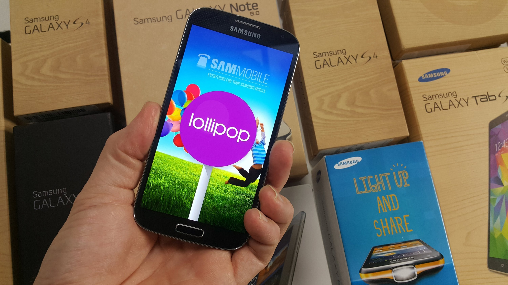

Delivering pro-active integrated and holistic solutions to our customer's risk portfolio needs
through re-engineered and measurable business processes!

Wadhac Ltd. started issuing its staff members brand new Google Nexus devices running Android version 5.1.1 (Lollipop) which are linked into the firms "COPE" (Corporate Owned, Personally Enabled) mobile device management system allowing its staff to retrieve email and files from the wadhac.co.uk network while both on site and away from the office. With Android 5.0 comes a new design system called Material Design, which includes a whole new set of user interface elements providing responsive, natural motion, realistic lighting and shadows, and familiar visual elements make it easier to navigate your device. Device notifications has also been massively improved resulting in fewer disruptions, phone calls don't interrupt what you're watching or playing, more intelligent ranking of notifications based on who they're from and the type of communication. Most importantly Android 5.1.1 is keeping Wadhac Ltd's users secure with SELinux enforcing for all applications means even better protection against vulnerabilities and malware. Android Smart Lock securing our phones and tablets by pairing it with trusted devices like wearables or even company cars. We look forward to having a prosperous and productive workforce!CISO & IT Manager
Wadhac Ltd.